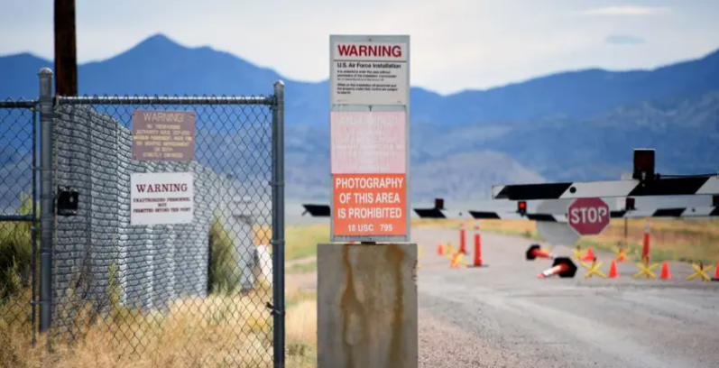

Área 51: el secreto extraterrestre mejor guardado de Estados Unidos

En pleno desierto de Nevada, Estados Unidos, se encuentra una de las instalaciones militares más misteriosas y vigiladas del planeta: el Área 51. Durante décadas, esta base ha permanecido rodeada de secretismo, alimentando las sospechas de quienes creemos que el Gobierno estadounidense oculta allí algo mucho más extraordinario que aeronaves experimentales: tecnología procedente de otros mundos.
Una base rodeada de secretos
La historia oficial del Área 51 comienza en 1955, cuando la CIA empezó a utilizar estas instalaciones para desarrollar y probar aviones espía como el U-2 y, posteriormente, el A-12 OXCART.
Sin embargo, para muchos investigadores del fenómeno OVNI, esta explicación resulta insuficiente. ¿Por qué una instalación destinada supuestamente a desarrollar aeronaves militares ha estado sometida a unas medidas de seguridad tan extraordinarias? ¿Qué proyectos podrían justificar décadas de secretismo y restricciones de acceso?
Los numerosos relatos sobre luces misteriosas, objetos capaces de realizar maniobras imposibles y aeronaves de formas poco convencionales han contribuido a reforzar la sospecha de que en el Área 51 se experimenta con tecnologías que podrían no tener un origen humano.
Bob Lazar y las supuestas naves extraterrestres
Uno de los testimonios más controvertidos apareció en 1989, cuando Bob Lazar afirmó haber trabajado en una instalación secreta conocida como S-4, supuestamente situada en las proximidades del Área 51.
Según sus declaraciones, en aquellas instalaciones se almacenaban varias naves de origen extraterrestre que estaban siendo estudiadas por científicos estadounidenses. Lazar aseguró que su trabajo consistía en investigar sus sistemas de propulsión mediante ingeniería inversa, con el objetivo de comprender y reproducir una tecnología muy superior a la nuestra.
También habló de un supuesto elemento químico utilizado como parte de estos sistemas de propulsión, capaz, según su relato, de intervenir en la generación de efectos gravitatorios extraordinarios.
Aunque sus afirmaciones siguen sin contar con pruebas verificables que las respalden, su testimonio marcó un antes y un después en la historia de la ufología. Para numerosos creyentes, Lazar podría haber revelado una pequeña parte de un programa cuya verdadera dimensión permanece oculta.
¿Tecnología humana o ingeniería extraterrestre?
En 2013, la CIA reconoció oficialmente la existencia del Área 51 mediante la publicación de documentos desclasificados. Sin embargo, aquellos archivos se centraban principalmente en proyectos aeronáuticos desarrollados durante la Guerra Fría.
Para quienes sospechamos que existe un programa de investigación extraterrestre, esta desclasificación no resolvió las grandes incógnitas. Al contrario, planteó nuevas preguntas.
¿Y si algunos de los avances tecnológicos más sorprendentes de la aviación militar estuvieran relacionados con el estudio de vehículos recuperados? ¿Y si las aeronaves experimentales fueran solamente la parte visible de investigaciones mucho más ambiciosas?
No existen pruebas públicas concluyentes que demuestren estas posibilidades, pero tampoco conocemos todos los proyectos que se desarrollan actualmente en estas instalaciones.
El verdadero secreto del Área 51
Quizá nunca lleguemos a conocer todo lo que sucede detrás de sus perímetros de seguridad. Sin embargo, décadas de testimonios, avistamientos y declaraciones controvertidas han convertido al Área 51 en uno de los grandes símbolos del misterio extraterrestre.
Desde nuestra perspectiva, resulta difícil creer que tantos años de secretismo estén relacionados exclusivamente con aviones experimentales.
¿Y si el mayor descubrimiento de la historia de la humanidad ya se hubiera producido, pero permaneciera oculto en algún hangar del desierto de Nevada?
Tal vez la verdadera pregunta no sea si estamos solos en el universo, sino cuánto tiempo llevan algunos gobiernos conociendo la respuesta.